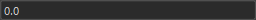
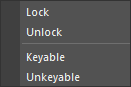

This tool allows you to change the state of node attributes.
This tool allows you to change the state of node attributes. Mainly, you can lock attributes, change the display state of nodes, and modify attribute values.
You can launch the tool from the dedicated menu or by using the following command:
import faketools.tools.attribute_lister
faketools.tools.attribute_lister.show_ui()
Load button to load the selected nodes into the upper list. If you hold down the Shift key while selecting, the nodes will be added to the list.Enter key to change the value of the selected attributes.The conditions for changing values are as follows.
If the value can be changed, the field will be displayed as shown below.

Unlocked attributes. If any of the selected nodes or attributes are locked, the value cannot be changed. If locked, the field will be grayed out.

Attributes without connections. If any of the selected nodes or attributes have connections, the value cannot be changed.
If there are connections, the field will be displayed in yellow.
Attributes of the same type. If any of the selected nodes or attributes are of a different type, the value cannot be changed. If there are attributes of different types, the field will be displayed in red.

Right-click on the attribute list to display a menu for changing the state of nodes.

You can perform the following operations on the attributes of the selected nodes:
Right-click on the node list to display a menu for selecting nodes.